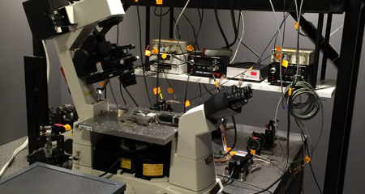

The PMI offers unique muscle assessment and imaging technologies to our members. See below for specific information.
Muscle Physiology Assessment Core
Services Available:
1) In Vitro Muscle Evaluation: Mechanical evaluation (i.e. contraction time, relaxation time, absolute twitch and tetanic forces, specific twitch and tetanic forces, Force drop after eccentric contractions (ECC), post-ECC dye exclusion studies, fatigue & recovery studies, metabolic studies (i.e. contraction mediated glucose uptake).
2) In Vivo Exercise Evaluation: Rota –Rod peformance, Grip Strength, Voluntary exercise (Cages), Treadmill with uphill/downhill exercise studies, Hypoxic exercise tolerance.
3) In Vivo Muscle Evaluation: Electromyograms (EMG), Nerve stimulation evoked muscle contractions for absolute twitch and tetanic forces, specific twitch and tetanic forces, Force drop after eccentric contractions (ECC), repetitive stimulations for myasthenia studies, fatigue & recovery studies. Shivering thermogenesis, muscle and brown fat heat production.
4) In Vivo Respiratory Evaluation: Whole body plethysmography (Respiratory Rate, Tidal Volume, Minute Volume), Hypoxic Ventilatory Response (HVR), Hypercapnic Ventilatory Response (HCVR), Hypoxic exercise tolerance, Phrenic nerve recordings with intercostals wall EMGs.
5) Preparation of post-evaluation muscle / tissues for morphological analyses (for frozen, fixed and EM sections).
More Information:
For more information on our Muscle Physiology Assessment Core services please contact us.